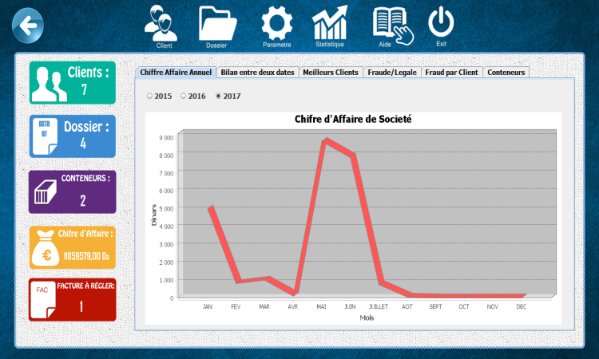

Cet ongle est très important, il offre un ensemble d’indicateurs
de performance représentés graphiquement.
La fenêtre contient cinq différents compteurs (à gauche) et
une zone d’affichage des schémas graphiques.
Le choix du graphe se fait en utilisant la barre au-dessus
de la zone d’affichage.
